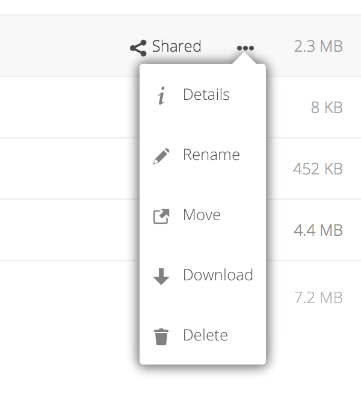

Acceder a sus archivos utilizando la interfaz web de Nextcloud
Puede acceder a sus archivos en Nextcloud con la interfaz web de Nextcloud, y crear, previsualizar, editar, borrar, compartir y volver a compartir archivos. Su administrador de Nextcloud tiene la opción de deshabilitar estas características, así que consulte con su administrador de sistemas si echa en falta alguna de ellas.
Usted puede asignar etiquetas a cada archivo. Para crear etiquetas, abra la vista Detalles de un archivo. A continuación escriba las etiquetas. Para introducir más de una etiqueta, pulse la tecla de retorno tras crear cada etiqueta. Todas las etiquetas son etiquetas del sistema, y son compartidas por todos los usuarios en tu servidor Nextcloud.
A continuación, utilice el filtro Etiquetas en la barra lateral izquierda para filtrar sus archivos por etiquetas:
Utilice la vista Detalles para añadir y leer comentarios de cualquier carpeta o archivo. Los comentarios son visibles a todos los que tengan acceso al archivo:
Puede reproducir vídeos en Nextcloud con la aplicación Reproductor de Vídeo al hacer clic en el archivo. La retransmisión del vídeo en el reproductor de vídeo nativo de Nextcloud depende de su navegador web y el formato del vídeo. Si su administrador de Nextcloud ha habilitado la retransmisión de vídeo, y no funciona en su navegador web, es posible que sea un problema de éste último. Véase en https://developer.mozilla.org/en-US/docs/Web/HTML/Supported_media_formats#Browser_compatibility la compatibilidad de cada navegador web con cada formato multimedia.
Nextcloud puede mostrar miniaturas de imágenes, carátulas de MP3 y archivos de texto, si lo permite el administrador de Nextcloud. Mantenga su cursor sobre un archivo o carpeta para mostrar controles para las siguientes acciones:
Favoritos
Haga clic en la estrella a la derecha del icono del archivo para marcarlo como favorito:
También puede encontrar todos sus favoritos en el filtro Favoritos de la barra lateral izquierda.
Menú de desborde
El menú de desborde (tres puntos) muestra detalles de los archivos y le permite renombrar, descargar y borrar archivos.

La vista Detalles muestra información sobre Actividad, Compartir y Versión.
El icono del engranaje Ajustes en la esquina inferior derecha le permite mostrar u ocultar archivos ocultos en tu interfaz web de Nextcloud. Estos también se llaman archivos-punto, porque su nombre empieza por un punto, por ejemplo .mailfile. El punto indica a tu sistema operativo que deben ser ocultados en exploradores de archivos, salvo que elijas mostrarlos. Normalmente son archivos de configuración, así que la opción de ocultarlos reduce el desorden.
Usted puede visualizar archivos de texto sin comprimir, archivos OpenDocument, vídeos e imágenes en los visores incrustados de Nextcloud al hacer clic en el nombre de archivo. Es posible que haya otros tipos de archivo que pueda visualizar si su administrador de Nextcloud los ha habilitado. Si Nextcloud no puede mostrar un archivo, empezará el proceso de descargar el archivo a su ordenador.
Navegar a través de las carpetas en Nextcloud es tan simple como hacer clic en una carpeta para abrirla y utilizar el botón Atrás de su navegador para volver al nivel anterior. Nextcloud también ofrece una barra de navegación encima del campo Archivos para una navegación rápida.
Toda carpeta que se haya compartido queda marcada con el icono Compartido. Los enlaces públicos quedan marcados con un par de eslabones de una cadena. Las carpetas no compartidas quedan sin marcar:
Puede seleccionar uno o más archivos o carpetas mediante sus casillas. Para seleccionar todos los archivos de la carpeta actual, seleccione la casilla situada encima de la lista de archivos.
Cuando seleccione múltiples archivos, puede borrarlos o descargarlos como un archivo ZIP empleando los botones Borrar o Descargar que aparecen en la parte superior.
Nota
Si el botón Descargar no aparece, el administrador ha deshabilitado esta característica.
Usted puede mover archivos y carpetas al arrastrarlos y dejarlos caer en cualquier directorio.
Crear o conectarse con un enlace compartido de federación.
La compartición de nube federada le permite montar archivos compartidos por otros servidores de Nextcloud, y administrarlos como un archivo compartido local. Véase Usar la compartición de archivos en federación para aprender cómo crear y conectarse a nuevos archivos compartidos federados.


Comentarios
Utilice la vista Detalles para añadir y leer comentarios de cualquier carpeta o archivo. Los comentarios son visibles a todos los que tengan acceso al archivo: